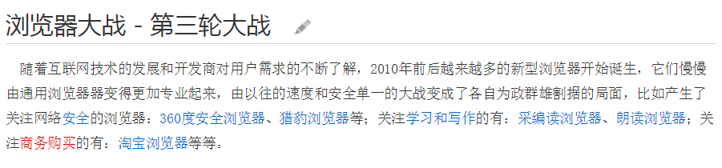

瀏覽器大戰
Browser War

Browser war by Scott Chen is licensed under a Creative Commons Attribution-ShareAlike 4.0 International License.
這是一個慘烈的故事
先來個調查


第一次瀏覽器大戰

V.S.

初期:Netscape占優
較早佈局，較為成熟
可跨平台，使用者介面一致
Netscape 72, Microsoft 18

IE後來居上
支援CSS,製作網頁較易
使用IE專用標籤
MS規模較大(有錢)
將瀏覽器與作業系統合併
免費！
Netscape以開源(Mozilla 計畫)對抗,but.....
投資失敗 + 客源流失
勝者:
後續影響
- 把加入新功能的重要性放在修正錯誤之前
- 使用專屬格式，不尊重公開標準
- VBScript、ActiveX 等IE專用語法出現
第二次瀏覽器大戰-初期
V.S.

背景:IE勢大
- 攻擊主要對象
- 微軟傻傻的
(逐漸解散開發團隊)
Firefox持續努力......
Linux逐漸崛起
介面設計與IE相似
支援新分頁
IE市場被大量蠶食
第二次瀏覽器大戰-後期
Firefox不斷發現安全漏洞
速度快捷著稱的Opera免費推出
IE7強化了功能與安全性
多方瀏覽器崛起
Chrome崛起
Chromium開源測試
穩定性、速度和安全性為目標
與服務結合
V8引發的後果:
- Google Chrome市占超越Firefox
- Javascript技術被大量運用
近況:
Chrome由於套件增加，消耗資源問題顯現
Opera放棄自製內核，改用Chrome使用之內核技術
Firefox無廠商支持，但因安全及開源保有一定市場
微軟表示投降輸一半，我們改玩Edge
中國互X百科表示:
呵呵
之後會如何呢?
讓我們繼續看下去
咦?有人問Safari?
人家只玩自己的~才不跟你們玩咧~
_(┐「ε:)_